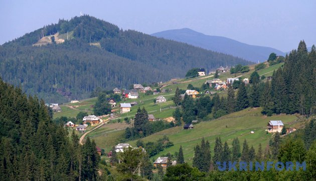

Яремче — низькогірний курорт, розташований в надзвичайно мальовничій улоговині між горами на березі Пруту. Через місто пролягає дорога до найвищої вершини Українських Карпат — Говерли.
Перша історична згадка про Яремче датуєтьcя 1787 роком. За легендою назва походить від імені гуцула Яреми Годованця, який першим оселився на цій території. Містечко почало активно розвиватися після будівництва залізниці Станіславів (тепер Івано-Франківськ) — Яремче — Ворохта — Рахів в 1894р., яка призначалася для вивезення лісу у промислові райони Австро-Угорщини. Ще раніше Яремче стало популярним як дачне містечко, де відпочивали жителі Львова, Кракова, Варшави. Цікаво, що в ті часи набагато відомішими були курорти Дора і Ямна, хоча тепер ви не знайдете на карті таких населених пунктів — вони стали присілками Яремче. Влітку ця місцевість ставали базою для художніх пленерів, у Дорі навіть був будинок відомого художника О. Новаківського.
Архівні фото
Зараз Яремче — найвідоміший туристичний центр Прикарпаття, має понад 40 туристсько-рекреаційних закладів і санаторіїв, більше 100 об'єктів зеленого туризму. Для курортної терапії використовуються кліматичне лікування, мінеральні ванни тощо. Майже половину території Яремчанської міськради займає Національний природний парк "Карпатський", утворений в 1980 р. (перший в Україні).
Населення міста зберегло народні звичаї та обряди, найбільш цікаві з них — гуцульська "Розколяда", Андріївські вечорниці, Водохреще, купальське свято "Гуцульська берегиня".
День міста відбувається у останню неділю липня.
До 2006 року у вжитку були дві назви міста — Яремча і Яремче, перша з яких з'явилася у 20-х роках ХХ ст. завдяки польським урядовцям, а потім була зафіксована радянськими. Первісну назву Яремче було уточнено рішенням Верховної Ради. |